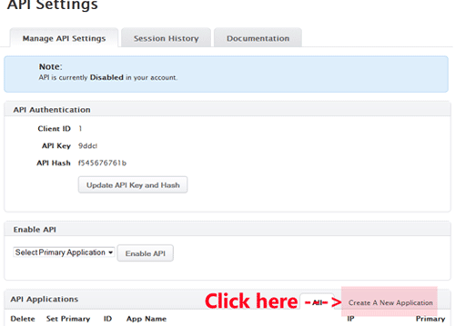
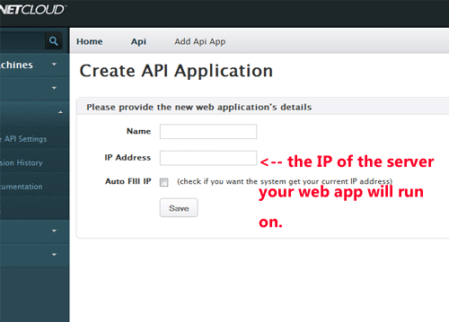
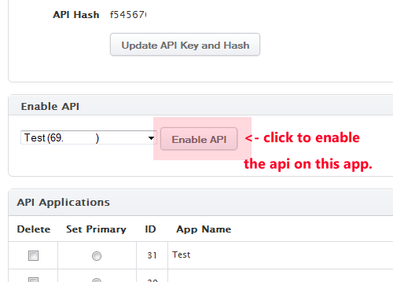
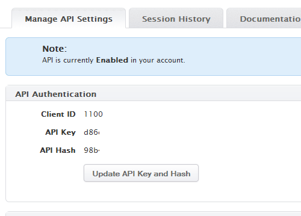
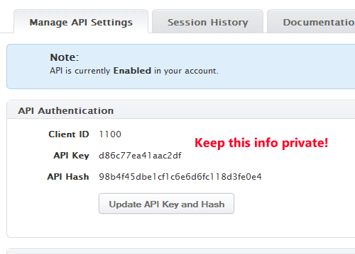

Introduction
Welcome to the Gigenet API version 2. This API is more secure, provides greater flexibility as well as compatibility with a large range of tools and SDKs. We recommend that all new integrations are built using this API.
This API version has been designed to be compatible to as large degree as possible with the Amazon Webservices API focusing primarily on the so-called Elastic Compute Cloud API. Compatibility with this API means that you can use the many different SDK available for different languages to interface with Gigenet's API just as you would Amazon web services. Some tools written for AWS might work without modification for use with our API, while others might require minimal changes. In addition to that, you can of course also set-up requests and connections directly to our API by easily implementing the interface yourself.
This guide is meant for you to aquaint yourself with the subset of the AWS API that we implement. You can also reference with the AWS API for more details, though beware that our API might ignore certain parameters specified in the AWS API documentation if they are incompatible or have no meaning with regards to our infrastructure.
Overview of API
For each API request you construct a query string which is then cryptographically signed using your authentication details. The API will process your request and then either return an error, a return of value or data set based on your API action. You can provide arguments to the API either as part of the query string or via parameters sent as part of the request body.
Return values are returned as an XML document, containing the specified return values for each API function. If you need more examples of how the return values might look you can always also refer to the AWS API documentation for the corresponding API function call.
In case of errors, you will receive an HTTP error return code (400, 401 or 500) along with an XML document describing the error.
The GigeNET API server URL is https://api.thegcloud.com. All API actions should be sent to the API server URL.
Supported AWS SDKs
All standard AWS SDKs should work with the API. Compatibility has been verified for the following:
- AWS PHP SDK
- AWS Ruby SDK
- boto2 (Python)
- boto3 (Python)
Other SDKs can be found on the AWS pages..
Installing the SDK
# Install pip if required
easy_install pip
# Install the boto2 SDK
pip install boto
# Install pip if required
easy_install pip
# Install the boto2 SDK
pip install boto3
# Install composer
curl -sS https://getcomposer.org/installer | php
# Install the latest AWS SDK
php composer.phar require aws/aws-sdk-php
# Install the latest AWS SDK
gem install aws-sdk
The SDKs can be installed using the standard package managers for your chosen languages.
Even though using one of these SDKs is the simplest way to access the API, you can also manually use the REST API using custom code to create integrations without an SDK. In this documentation we have provied some examples of how to authenticate and make API calls without using an SDK.
Creating API tokens
Before you can use the API, you will need to enable it, create a new API applications and generate API keys which you will then be using to authenticate with the API. You can access the API settings rom the GigeNET client dashboard.
Step 1. Create a new API application in the GigeNET client dashboard.


Step 2. Enable the use of the GigeNET API in your API settings.

Step 3. Now click "Update API Key and Hash" to obtain your API key and hash code.


Connecting to the API
import boto
conn = boto.connect_ec2_endpoint(
'https://api.thegcloud.com',
'APIKEY',
'APIHASH')
import boto3
conn = boto3.client('ec2',
endpoint_url='https://api.thegcloud.com',
aws_access_key_id='APIKEY',
aws_secret_access_key='APIHASH',
region_name='ord1');
<?php
require('vendor/autoload.php');
use \Aws\Ec2\Ec2Client;
$ec2Client = Ec2Client::factory(array(
'endpoint' => 'https://api.thegcloud.com',
'region' => 'ord1',
'credentials' => array(
'key' => 'APIKEY',
'secret' => 'APIHASH'
)
));
<?php
/**
* Generates an API signature for a given request using the V2 signature method.
*
* @param type $method GET or POST
* @param type $host The HTTP host that will be used for this request (API endpoint).
* @param type $uri The URI/path (ie. the request URI without query string or host). \
If there is no path component to the URI it needs to be set to `/`.
* @param type $qs The query string (request key/values)
* @param type $signature_method HMAC_SHA1 or HMAC_SHA256 - HMAC_SHA256 preferred.
* @return type
*/
function signV2($method, $host, $uri, $qs, $signature_method, $secret_key) {
$canonicalRequest = "$method\n$host\n$uri\n$qs";
$signature_algos =
array('HmacSHA256' => 'sha256', 'HmacSHA1' => 'sha1' );
return base64_encode(
hash_hmac($signature_algos[$signature_method],
$canonicalRequest,
$secret_key,
true));
}
require 'aws-sdk'
ec2 = Aws::EC2::Resource.new(
endpoint: 'https://api.thegcloud.com',
region: 'ord1',
access_key_id: 'APIKEY',
secret_access_key: 'APIHASH'
)
Make sure to replace
APIKEYwith your API key andAPIHASHwith your API hash from the API settings page.
Once you have an API key and hash you can use them together with the SDK of your choice, or generated signed requests through your own code. Sample code for connecting to the API is available on the left.
Authentication
All requests to the API are required to be cryptographically signed. By first generating the request parameters and then applying a cryptographic hash function to the request before you send it you prove that the request really originated from you. In this way, we can verify the request but we can also ensure that expired requests are not re-used in case somebody gets access to the request.
The signed requests are authenticated without transferring any secrets over the network, this means that while we recommend you always use HTTPS to ensure an SSL/TLS encrypted connection to the API, the request URLs themselves are not secret. The API hash/secret key should never be transferred over the network and should remain with you locally. Each request also has a timestamp or an expiry date affixed to it, meaning that if you want you can pre-create and pre-sign requests for a later date. Remember though that a signed request will be accepted by our servers as originating from you - if you pre-create signed URLs and subsequently loose control of them you will need to reset the API token.
We support the same process of signing requests as the Amazon Web Services API with both the V2 and V4 signing process supported. This means that you can follow their guide with regards to how to sign requests: http://docs.aws.amazon.com/general/latest/gr/signing_aws_api_requests.html.
You can also generate new time limited secrets and access tokens using the GetSessionToken API call (described below). This is useful if you want to generate temporary credentials which can be used in exactly the same way as normal credentials. If you are using a temporary session token, you will need to attach it to every request as described in the AWS API documentation.
Signing schemes
You can use either the AWS V2 or V4 signing process to send requests to our API. The V2 process generates a signature and appends it as a query string parameter, while the V4 process uses an Authorization header. The V4 process is the recommended one and is the one that all SDKs support.
Sample V2 signed request URL:
https://api.thegcloud.com?&AWSAccessKeyId=APIKEY&Action=DescribeInstances&SignatureMethod=HmacSHA256&SignatureVersion=2&Timestamp=2011-10-03T15%3A19%3A30&Version=2009-03-31&Signature=calculated value
Sample V4 Authorization header:
Authorization: AWS4-HMAC-SHA256 Credential=APIKEY/20180304/ord1/ec2/aws4_request, SignedHeaders=content-type;host;x-amz-content-sha256;x-amz-date, Signature=calculated value
In the AWS API documentation you can find extensive details on how to generate a V2 signature or a V4 signature.
Session Tokens
import boto
import boto.sts
from boto.regioninfo import RegionInfo
sts = boto.sts.STSConnection(aws_access_key_id='APIKEY',
aws_secret_access_key='APIHASH',
is_secure=True,
path='/'
region=RegionInfo(name='ord1',
endpoint='api.thegcloud.com'))
session = sts.get_session_token()
import boto3
sts = boto3.client('sts',
endpoint_url='https://api.thegcloud.com',
aws_access_key_id='APIKEY',
aws_secret_access_key='APIHASH',
region_name='ord1');
session = sts.get_session_token()
require 'aws-sdk'
sts = Aws::STS::Client.new(
endpoint: 'https://api.thegcloud.com',
region: 'ord1',
access_key_id: 'APIKEY',
secret_access_key: 'APIHASH',
http_wire_trace: true
)
session = sts.get_session_token()
<?php
require('vendor/autoload.php');
use \Aws\Sts\StsClient;
$stsClient = StsClient::factory(array(
'endpoint' => 'https://api.thegcloud.com',
'region' => 'ord1',
'credentials' => array(
'key' => 'APIKEY',
'secret' => 'APIHASH'
)
));
$session = $stsClient->GetSessionToken();
To get time limited session tokens, we provide a small subset of the AWS STS API to allow you to generate time limited tokens. This can be useful in the scenario where you want a trusted service to provide tokens to less trusted services or user applications. As these tokens are time limited, there is less risk of issuing and providing these than there is in providing your main API credentials.
The GetSessionToken API call returns XML like this:
<?xml version="1.0" encoding="utf-8"?>
<GetSessionTokenResponse>
<GetSessionTokenResult>
<Credentials>
<SessionToken>SESSIONTOKEN</SessionToken>
<SecretAccessKey>SECRETACCESSKEY</SecretAccessKey>
<Expiration>2018-03-04T12:21:50+00:00</Expiration>
<AccessKeyId>SESSIONACCESSKEY</AccessKeyId>
</Credentials>
</GetSessionTokenResult>
<RequestID>12e6d6095ad5912a8b209e42e466afdb</RequestID>
</GetSessionTokenResponse>
Parameters
| Parameter | Default | Required | Description |
|---|---|---|---|
| DurationSeconds | 3600 | false | The number of seconds that the token should be valid for, minimum 900 and maximum 129600. |
Errors
The HTTP error code returned from the API response will be one of:
- 400 - A client or sender error occurred, meaning an error in the parameters or the conditions of the API call.
- 401 - An authentication error occurred.
- 500 - A server error, meaning that the server experienced an unexpected error or fault.
4xx errors are as a result of the input you have provided to the API, while a 500 error means there has been an error in our backend - if it re-occurs please contact customer service.
| Type | Exception Name | Meaning |
|---|---|---|
| Auth | AuthFailure | Your API authentication details are incorrect. |
| Auth | SignatureDoesNotMatch | The signature you have calculated for the request is not valid. |
| Sender | IncompleteSignature | The signature provided lacked fields. |
| Sender | MissingAuthenticationToken | No or incomplete authentication token provied. |
| Client | MissingAction | You did not specify an API action. |
| Client | InvalidAction | The action you requested is not supported by our API. |
| Client | RequestExpired | The request expired, please try again. |
| Client | MalformedQueryString | The query string provided with the request was invalid. |
| Client | ValidationError | Could not validate your input, one or more values are invalid. |
| Client | MissingParameter | A required parameter for the API call is missing. |
| Client | AddressLimitExceeded | You have used the maximum number of addresses. |
| Client | MaxSpotInstanceCountExceeded | You have requested too many instances. |
| Client | RequestResourceCountExceeded | You have exceedd the limit for the number of resources you are trying to create. |
| Client | TagLimitExceeded | You have used the maximum number of tags on your account. |
| Client | InsufficientFunds | There is too little funds to execute this operation. |
| Client | InvalidInstanceAttributeValue | One of the attributes specified for the instance is invalid. |
| Client | InvalidInstanceType | The instance type requested for the cloud machine was invalid. |
| Client | InvalidParameterValue | One of the parameters provided had an invalid format. |
| Client | InvalidAMIID.NotFound | The cloud machine image requested could not be found. |
| Client | InvalidAMIID.NotAvailable | The cloud machine image requested is not available for new instances. |
| Client | InvalidHostname.Duplicate | You specified a duplicate hostname. |
| Client | InvalidSubnetID.NotFound | The network subnet id provided was not found. |
| Client | InvalidState | The cloud machine is in an invalid state to run this action. |
| Client | InvalidInstanceID.NotFound | The cloud machine instance you specified could not be found. |
| Client | InvalidZone.NotFound | The region or zone you specified is invalid. |
| Client | InvalidAddress.NotFound | The address you specified could not be found. |
| Client | InvalidInput | An invalid input was rovided to the call. |
| Client | InvalidKeyPair.NotFound | The corresponding SSH Key could not be found. |
| Client | InvalidKeyPair.Duplicate | A duplicate SSH key was uploaded. |
| Server | DryRunOperation | The DryRun succeeded, the API call could be executed and permission was given to run it. |
| Server | ServerError | An internal error occurred, try later or contact customer service. |